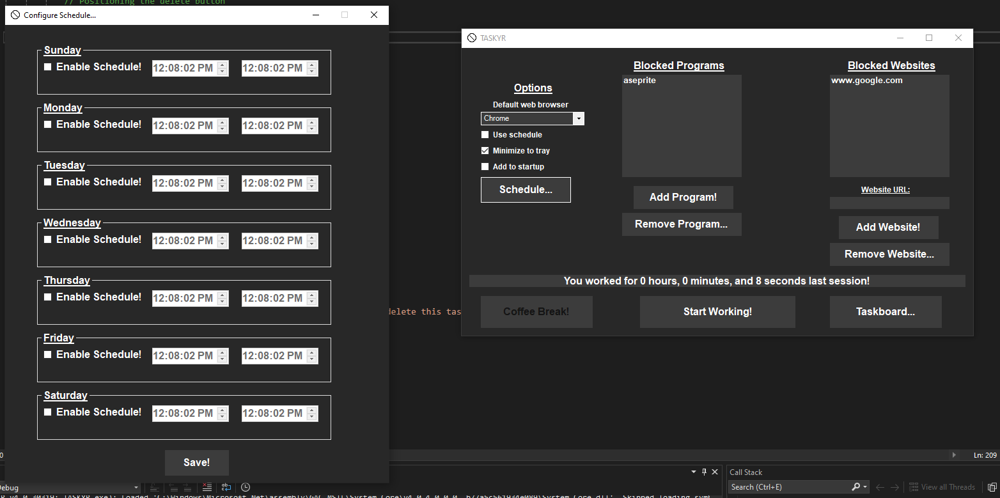
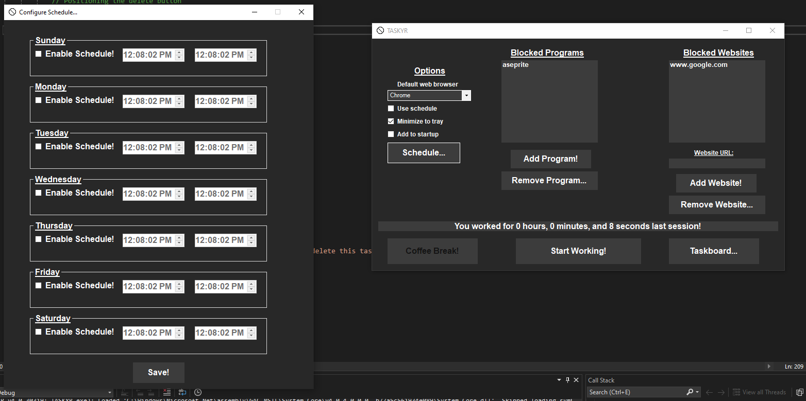

TASKYR
TASKYR is a simple yet powerful productivity tool designed to help you stay focused and manage your time effectively.
Developed using C# and WinForms on the .NET framework, TASKYR provides essential features to block distracting programs and websites, allowing you to concentrate on what truly matters.
Language: C#
Status: RELEASED!
 
